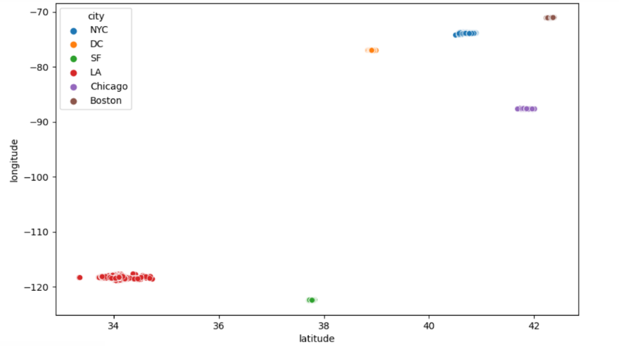
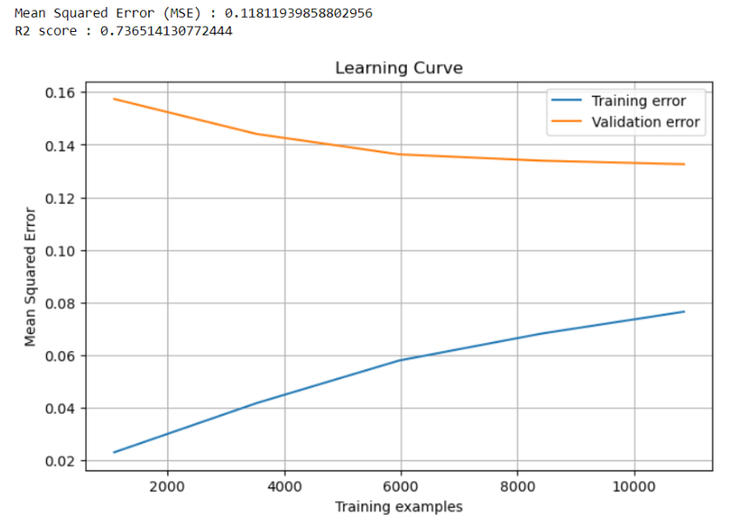

Airbnb Price Prediction
Project Overview
The aim of this project is to predict the rental price of an Airbnb based on a set of characteristics. A large part of the work was to convert the textual characteristics into information that can be used by a machine learning algorithm.
Converting Textural Characteristics
An initial sort was carried out on features that were difficult to process, such as unique values like ‘id’, ‘name’, ‘unnamed: 0’, and ‘description’. Boolean features (‘cleaning_fee’, ‘host_has_profile_pic’, ‘host_identity_verified’, and ‘instant_bookable’) were replaced by 0s or 1s, ‘first_review’ and ‘last_review’ by the number of days since the first and last evaluations (the same principle was applied to the ‘host_since’ feature). Nan' in “host_response_rate” have been replaced by 0 and percentages by decimal numbers between 0 and 1, “cancelation_policy” values by an ordinal encoding with 0 to 4 depending on whether the variable takes the value “flexible”, “moderate”, “strict”, “super_strict_30” or “super_strict_60”, “amenities” by the number of elements it contains, property_type', “room_type”, and “bed_type” by associating a particular number with each type of distinct element in one of these characteristics, and finally as far as the “city” characteristic is concerned I've also encoded it after giving a visualisation of the regions according to longitude and latitude coordinates.

PCA And Correlation Matrix
To simplify the data even further without losing a significant amount of information, I had to carry out a PCA. However, the results of the PCA didn't give me any interesting results in terms of simplifying the model without any significant loss of information. This is why I directly deleted certain characteristics after analysing a correlation matrix


Machine Learning Algorithm
Having sorted the data and identified the relevant features, all that remained was to separate Data_AirbnbTrain into two variables X and y, where y contains 'log_price' and X the other features. In a first test, 3 models were tested: linear regression, decision trees and random forest. The results showed problems of high bias and low variance. I decided to carry out a second test on these 3 models, solving these problems. To improve our models, it is possible to increase the number of features to make the model more complex (this can be done by re-training the model with DataAirbnb_Train, which contains many more features), but also to decrease the regularization of our model.
